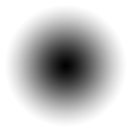
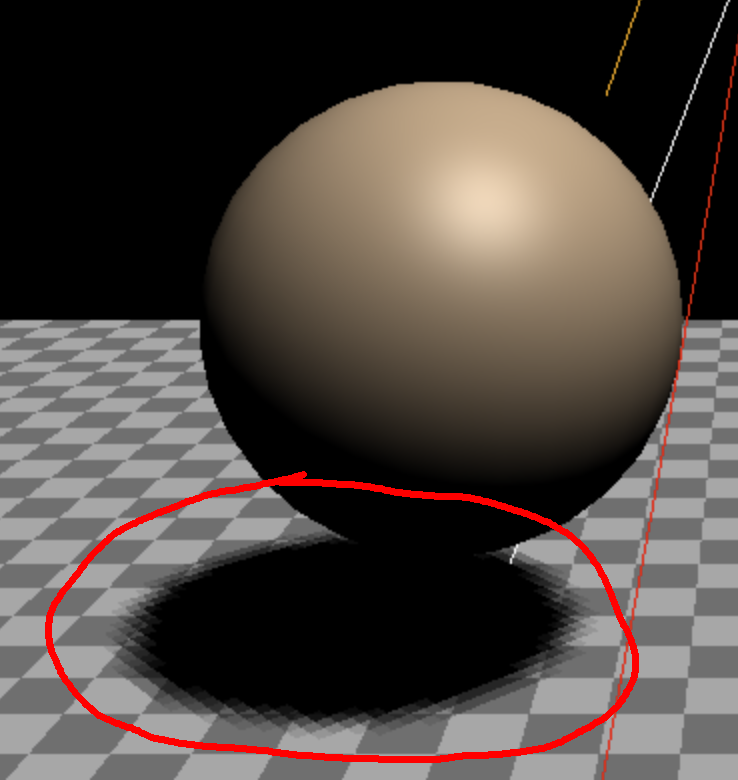

本文是关于 three.js 系列文章的一部分。第一篇文章是 three.js 基础。如果你还没有阅读过，并且你是 three.js 新手，你可能想从那里开始。上一篇文章是关于相机的，在阅读本文之前阅读它很重要，就像在这之前的 关于灯光的文章 一样。
计算机上的阴影可能是一个复杂的话题。有各种解决方案，并且所有解决方案都有权衡，包括 three.js 中可用的解决方案。
Three.js 默认使用 阴影贴图。阴影贴图的工作方式是，对于每个投射阴影的光源，所有标记为投射阴影的物体都会从光源的视角进行渲染。再读一遍! 并让它深入理解。
换句话说，如果你有 20 个物体，和 5 个光源，并且所有 20 个物体都在投射阴影，所有 5 个光源都在投射阴影，那么你的整个场景将被绘制 6 次。所有 20 个物体会为光源 #1 绘制一次，然后为光源 #2 绘制一次，然后是 #3，依此类推，最后使用前 5 次渲染的数据绘制实际场景。
情况更糟，如果你有一个点光源在投射阴影，仅为该光源场景就必须绘制 6 次!
出于这些原因，通常会寻找其他解决方案，而不是让一堆灯光都生成阴影。一种常见的解决方案是使用多盏灯光，但只有一盏方向光生成阴影。
另一种解决方案是使用光照贴图或环境遮蔽贴图离线预计算灯光效果。这会产生静态光照或静态光照提示，但至少速度很快。我们将在另一篇文章中介绍这两者。
另一种解决方案是使用假阴影。制作一个平面，在平面上放一个灰阶纹理来近似阴影，然后将其画在物体下方地面上方。
例如，让我们使用这个纹理作为假阴影

我们将使用来自上一篇文章的一些代码。
让我们将背景颜色设置为白色。
const scene = new THREE.Scene();
+scene.background = new THREE.Color('white');
然后我们将设置相同的棋盘地面，但这次使用MeshBasicMaterial，因为地面不需要光照。
+const loader = new THREE.TextureLoader();
{
const planeSize = 40;
- const loader = new THREE.TextureLoader();
const texture = loader.load('resources/images/checker.png');
texture.wrapS = THREE.RepeatWrapping;
texture.wrapT = THREE.RepeatWrapping;
texture.magFilter = THREE.NearestFilter;
const repeats = planeSize / 2;
texture.repeat.set(repeats, repeats);
const planeGeo = new THREE.PlaneGeometry(planeSize, planeSize);
const planeMat = new THREE.MeshBasicMaterial({
map: texture,
side: THREE.DoubleSide,
});
+ planeMat.color.setRGB(1.5, 1.5, 1.5);
const mesh = new THREE.Mesh(planeGeo, planeMat);
mesh.rotation.x = Math.PI * -.5;
scene.add(mesh);
}
注意我们将颜色设置为1.5, 1.5, 1.5。这将把棋盘纹理的颜色乘以1.5, 1.5, 1.5。由于纹理颜色是0x808080和0xC0C0C0，即中灰色和浅灰色，乘以1.5将得到白色和浅灰色的棋盘。
让我们加载阴影纹理
const shadowTexture = loader.load('resources/images/roundshadow.png');
并创建一个数组来记住每个球体及其关联对象。
const sphereShadowBases = [];
然后我们将创建一个球体几何体
const sphereRadius = 1; const sphereWidthDivisions = 32; const sphereHeightDivisions = 16; const sphereGeo = new THREE.SphereGeometry(sphereRadius, sphereWidthDivisions, sphereHeightDivisions);
以及一个用于假阴影的平面几何体
const planeSize = 1; const shadowGeo = new THREE.PlaneGeometry(planeSize, planeSize);
现在我们将制作一堆球体。对于每个球体，我们将创建一个 base
THREE.Object3D，并将阴影平面网格和球体网格都作为基体的子对象。这样，如果我们移动基体，球体和阴影都会一起移动。我们需要将阴影稍微放在地面上方，以防止深度竞争。我们还将 depthWrite 设置为 false，以便阴影不会互相干扰。我们将在 另一篇文章中讨论这两个问题。阴影是一个 MeshBasicMaterial，因为它不需要光照。
我们给每个球体做一个不同的色调，然后保存基础部分、球体网格、阴影网格以及每个球体的初始y位置。
const numSpheres = 15;
for (let i = 0; i < numSpheres; ++i) {
// make a base for the shadow and the sphere
// so they move together.
const base = new THREE.Object3D();
scene.add(base);
// add the shadow to the base
// note: we make a new material for each sphere
// so we can set that sphere's material transparency
// separately.
const shadowMat = new THREE.MeshBasicMaterial({
map: shadowTexture,
transparent: true, // so we can see the ground
depthWrite: false, // so we don't have to sort
});
const shadowMesh = new THREE.Mesh(shadowGeo, shadowMat);
shadowMesh.position.y = 0.001; // so we're above the ground slightly
shadowMesh.rotation.x = Math.PI * -.5;
const shadowSize = sphereRadius * 4;
shadowMesh.scale.set(shadowSize, shadowSize, shadowSize);
base.add(shadowMesh);
// add the sphere to the base
const u = i / numSpheres; // goes from 0 to 1 as we iterate the spheres.
const sphereMat = new THREE.MeshPhongMaterial();
sphereMat.color.setHSL(u, 1, .75);
const sphereMesh = new THREE.Mesh(sphereGeo, sphereMat);
sphereMesh.position.set(0, sphereRadius + 2, 0);
base.add(sphereMesh);
// remember all 3 plus the y position
sphereShadowBases.push({base, sphereMesh, shadowMesh, y: sphereMesh.position.y});
}
我们设置了两盏灯。一盏是HemisphereLight，强度设置为2来真正增加亮度。
{
const skyColor = 0xB1E1FF; // light blue
const groundColor = 0xB97A20; // brownish orange
const intensity = 2;
const light = new THREE.HemisphereLight(skyColor, groundColor, intensity);
scene.add(light);
}
另一盏是DirectionalLight，这样球体会有一些立体感
{
const color = 0xFFFFFF;
const intensity = 1;
const light = new THREE.DirectionalLight(color, intensity);
light.position.set(0, 10, 5);
light.target.position.set(-5, 0, 0);
scene.add(light);
scene.add(light.target);
}
它会按原样呈现，但我们来给这些球体做动画。对于每个球体、阴影和底座组合，我们在 xz 平面移动底座，使用 Math.abs(Math.sin(time)) 上下移动球体，这为我们提供了弹跳动画。同时，我们也设置阴影材质的不透明度，使得每个球体升得越高，其阴影就越淡。
function render(time) {
time *= 0.001; // convert to seconds
...
sphereShadowBases.forEach((sphereShadowBase, ndx) => {
const {base, sphereMesh, shadowMesh, y} = sphereShadowBase;
// u is a value that goes from 0 to 1 as we iterate the spheres
const u = ndx / sphereShadowBases.length;
// compute a position for the base. This will move
// both the sphere and its shadow
const speed = time * .2;
const angle = speed + u * Math.PI * 2 * (ndx % 1 ? 1 : -1);
const radius = Math.sin(speed - ndx) * 10;
base.position.set(Math.cos(angle) * radius, 0, Math.sin(angle) * radius);
// yOff is a value that goes from 0 to 1
const yOff = Math.abs(Math.sin(time * 2 + ndx));
// move the sphere up and down
sphereMesh.position.y = y + THREE.MathUtils.lerp(-2, 2, yOff);
// fade the shadow as the sphere goes up
shadowMesh.material.opacity = THREE.MathUtils.lerp(1, .25, yOff);
});
...
这就是 15 种弹跳球。
在某些应用程序中，使用圆形或椭圆形的阴影是很常见的做法，当然，你也可以使用不同形状的阴影纹理。你还可以给阴影一个更硬的边缘。一个使用这种类型阴影的好例子是 动物森友会口袋露营，你可以看到每个角色都有一个简单的圆形阴影。这种做法既有效又省资源。纪念碑谷 看起来也为主角使用了这种阴影。
那么，接下来讲阴影贴图，有3种光可以投射阴影。DirectionalLight、PointLight 和 SpotLight。
我们先从DirectionalLight开始，使用光源文章中的辅助示例。
首先我们需要做的是在渲染器中开启阴影。
const renderer = new THREE.WebGLRenderer({antialias: true, canvas});
+renderer.shadowMap.enabled = true;
然后我们还需要告诉光源投射阴影。
const light = new THREE.DirectionalLight(color, intensity); +light.castShadow = true;
我们还需要检查场景中的每个网格，并决定它是否应该投射阴影和/或接收阴影。
我们让平面（地面）只接收阴影，因为我们并不关心下面发生了什么。
const mesh = new THREE.Mesh(planeGeo, planeMat); mesh.receiveShadow = true;
对于立方体和球体，我们让它们既接收阴影又投射阴影
const mesh = new THREE.Mesh(cubeGeo, cubeMat); mesh.castShadow = true; mesh.receiveShadow = true; ... const mesh = new THREE.Mesh(sphereGeo, sphereMat); mesh.castShadow = true; mesh.receiveShadow = true;
然后运行它。
发生了什么？为什么阴影的部分消失了？
原因是阴影贴图是通过从光源的视角渲染场景来创建的。在这种情况下，有一个位于 DirectionalLight 的相机，它正在观察它的目标。就像我们之前讲解过的 相机 一样，光源的阴影相机定义了一个区域，在该区域内阴影会被渲染。在上面的示例中，该区域太小了。
为了可视化该区域，我们可以获取光源的阴影相机并将 CameraHelper 添加到场景中。
const cameraHelper = new THREE.CameraHelper(light.shadow.camera); scene.add(cameraHelper);
现在你可以看到阴影投射和接收的区域。
来回调整目标 x 值，你应该会很清楚地看到，只有在灯光的阴影相机盒子里的部分才会绘制阴影。
我们可以通过调整灯光的阴影相机来调整该盒子的大小。
让我们添加一些 GUI 设置来调整光的阴影相机盒子。由于 DirectionalLight 表示光线以平行方向传播，DirectionalLight 为其阴影相机使用了 OrthographicCamera。我们在 上一篇关于相机的文章 中讲解了 OrthographicCamera 的工作原理。
回想一下，OrthographicCamera 通过其 left、right、top、bottom、near、far 和 zoom 属性定义它的盒子或视景体。
再次，让我们为 lil-gui 创建一个辅助类。我们将创建一个 DimensionGUIHelper，它会传入一个对象和两个属性。它会呈现一个属性，lil-gui 可以调整，并作为响应设置这两个属性，一个为正，一个为负。我们可以用它将 left 和 right 设置为 width 和 up，以及 down 设置为 height。
class DimensionGUIHelper {
constructor(obj, minProp, maxProp) {
this.obj = obj;
this.minProp = minProp;
this.maxProp = maxProp;
}
get value() {
return this.obj[this.maxProp] * 2;
}
set value(v) {
this.obj[this.maxProp] = v / 2;
this.obj[this.minProp] = v / -2;
}
}
我们还将使用在相机文章中创建的MinMaxGUIHelper来调整near和far。
const gui = new GUI();
gui.addColor(new ColorGUIHelper(light, 'color'), 'value').name('color');
gui.add(light, 'intensity', 0, 2, 0.01);
+{
+ const folder = gui.addFolder('Shadow Camera');
+ folder.open();
+ folder.add(new DimensionGUIHelper(light.shadow.camera, 'left', 'right'), 'value', 1, 100)
+ .name('width')
+ .onChange(updateCamera);
+ folder.add(new DimensionGUIHelper(light.shadow.camera, 'bottom', 'top'), 'value', 1, 100)
+ .name('height')
+ .onChange(updateCamera);
+ const minMaxGUIHelper = new MinMaxGUIHelper(light.shadow.camera, 'near', 'far', 0.1);
+ folder.add(minMaxGUIHelper, 'min', 0.1, 50, 0.1).name('near').onChange(updateCamera);
+ folder.add(minMaxGUIHelper, 'max', 0.1, 50, 0.1).name('far').onChange(updateCamera);
+ folder.add(light.shadow.camera, 'zoom', 0.01, 1.5, 0.01).onChange(updateCamera);
+}
我们告诉GUI在任何内容发生变化时调用我们的updateCamera函数。
让我们编写该函数来更新光源、光源的辅助工具、
光源的阴影相机，以及显示光源阴影相机的辅助工具。
function updateCamera() {
// update the light target's matrixWorld because it's needed by the helper
light.target.updateMatrixWorld();
helper.update();
// update the light's shadow camera's projection matrix
light.shadow.camera.updateProjectionMatrix();
// and now update the camera helper we're using to show the light's shadow camera
cameraHelper.update();
}
updateCamera();
现在我们已经为光源的阴影相机提供了GUI，我们可以调整这些数值。
将width和height设置为大约30，你就可以看到阴影是正确的，并且这个场景中需要阴影的区域已经完全覆盖。
但这就引出了一个问题，为什么不直接将 width 和 height 设置为一些巨大的数字来覆盖所有内容呢？将 width 和 height 设置为 100，你可能会看到像这样的情况

这些低分辨率阴影是怎么回事？！
这个问题又是一个需注意的与阴影相关的设置。阴影贴图是阴影绘制的纹理。那些纹理有一个固定的大小。我们上面设置的阴影相机区域会被拉伸到这个大小。这意味着你设置的区域越大，你的阴影就会越块状。
你可以通过设置 light.shadow.mapSize.width 和 light.shadow.mapSize.height 来设置阴影贴图的分辨率。它们的默认值是 512x512。你设置得越大，占用的内存就越多，计算速度也越慢，所以你应该尽量将它们设置得尽可能小，同时仍然保证场景正常工作。光源阴影相机区域也是同样的道理。区域越小，阴影效果越好，因此尽量将区域设置得尽可能小，同时仍然覆盖你的场景。请注意，每台用户的机器允许的最大纹理大小可以通过渲染器获取，参见 renderer.capabilities.maxTextureSize。
切换到 SpotLight光的影子摄像机变成了一个PerspectiveCamera. 不同于DirectionalLight's 影像相机，我们可以手动设置大部分参数，SpotLight's 影子摄像机由…控制SpotLight本身。阴影摄像机的fov直接连接到SpotLight'的 angle 设置。
aspect 是根据阴影贴图的大小自动设置的。
-const light = new THREE.DirectionalLight(color, intensity); +const light = new THREE.SpotLight(color, intensity);
我们又添加回了来自我们关于灯光的文章中的penumbra和angle设置。
最后是带有 PointLight 的阴影。由于 PointLight 会向各个方向发光，因此唯一相关的设置是 near 和 far。否则，PointLight 的阴影实际上是 6 个 SpotLight 阴影，每个阴影指向光源周围立方体的一个面。这意味着 PointLight 阴影速度会慢得多，因为必须将整个场景绘制 6 次，每个方向一次。
让我们在场景周围放一个盒子，这样我们就可以在墙壁和天花板上看到阴影。我们将把材质的 side 属性设置为 THREE.BackSide，这样我们就会渲染盒子内部而不是外部。像地板一样，我们将它设置为只接收阴影。还有，我们将设置盒子的位置，使其底部略低于地板，这样地板和盒子底部就不会发生深度冲突。
{
const cubeSize = 30;
const cubeGeo = new THREE.BoxGeometry(cubeSize, cubeSize, cubeSize);
const cubeMat = new THREE.MeshPhongMaterial({
color: '#CCC',
side: THREE.BackSide,
});
const mesh = new THREE.Mesh(cubeGeo, cubeMat);
mesh.receiveShadow = true;
mesh.position.set(0, cubeSize / 2 - 0.1, 0);
scene.add(mesh);
}
当然，我们还需要将光源切换为 PointLight。
-const light = new THREE.SpotLight(color, intensity); +const light = new THREE.PointLight(color, intensity); .... // so we can easily see where the point light is +const helper = new THREE.PointLightHelper(light); +scene.add(helper);
使用 position 图形用户界面设置来移动光源，你会看到阴影落在所有墙上。你还可以调整 near 和 far 设置，并且看到像其他阴影一样，当物体距离小于 near 时，它们不再接收阴影；而当距离大于 far 时，它们总是处于阴影中。